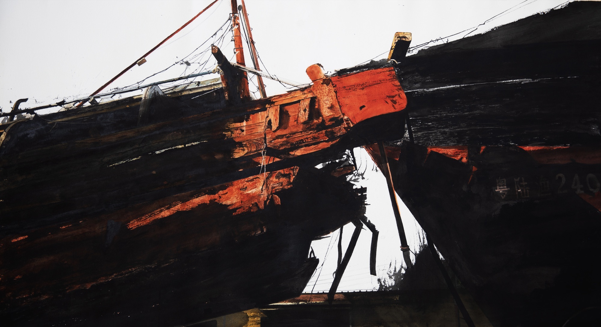

Encounter
相遇

- Artwork ID / 作品编号
- KW-W-000037
- Year / 年份
- 2023
- Medium / 媒介
- Watercolor on paper / 纸本水彩
- Dimensions / 尺寸
- 62 × 115 cm (H × W / 高 × 宽)
About the work / 作品介绍
Encounter captures the moment when two wooden boats meet. Strong contrasts between black, red, and brilliant daylight create a dramatic spatial tension. The vivid red bow becomes both the visual focus and the point where two forces converge. Beyond depicting boats, the work reflects encounters between people, experiences, and the world itself. The weathered surfaces preserve the traces of time and countless journeys. Every meeting leaves a mark, and every crossing opens the possibility for new relationships to emerge.
《相遇》以两艘木船交汇的瞬间为画面主体，通过黑、红两色的强烈对比，以及天光形成的高反差空间，营造出充满张力的视觉关系。画面中央的朱红船首成为视觉焦点，也成为两种力量彼此靠近的连接点。作品描绘的不仅是船与船的相遇，更借由这种交汇隐喻人与人、人与世界之间不断发生的连接与碰撞。斑驳粗粝的船身记录着时间留下的痕迹，也见证着每一次航行后的沉淀。当不同的生命轨迹彼此靠近，新的关系便由此生成。